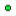

<!doctype html>
<html lang="en">
    <head>
        <meta charset="utf-8">
        <meta http-equiv="X-UA-Compatible" content="IE=edge">
        <meta name="viewport" content="initial-scale=1,user-scalable=no,maximum-scale=1,width=device-width">
        <meta name="mobile-web-app-capable" content="yes">
        <meta name="apple-mobile-web-app-capable" content="yes">
        <link rel="stylesheet" href="css/leaflet.css"><link rel="stylesheet" href="css/L.Control.Locate.min.css">
        <link rel="stylesheet" href="css/qgis2web.css"><link rel="stylesheet" href="css/fontawesome-all.min.css">
        <link rel="stylesheet" href="css/MarkerCluster.css">
        <link rel="stylesheet" href="css/MarkerCluster.Default.css">
        <link rel="stylesheet" href="css/leaflet-control-geocoder.Geocoder.css">
        <link rel="stylesheet" href="css/leaflet-measure.css">
        <style>
        html, body, #map {
            width: 100%;
            height: 100%;
            padding: 0;
            margin: 0;
        }
        </style>
        <title>Mapa de puntos</title>
    </head>
    <body>
        <div id="map">
        </div>
        <script src="js/qgis2web_expressions.js"></script>
        <script src="js/leaflet.js"></script><script src="js/L.Control.Locate.min.js"></script>
        <script src="js/leaflet.rotatedMarker.js"></script>
        <script src="js/leaflet.pattern.js"></script>
        <script src="js/leaflet-hash.js"></script>
        <script src="js/Autolinker.min.js"></script>
        <script src="js/rbush.min.js"></script>
        <script src="js/labelgun.min.js"></script>
        <script src="js/labels.js"></script>
        <script src="js/leaflet-control-geocoder.Geocoder.js"></script>
        <script src="js/leaflet-measure.js"></script>
        <script src="js/leaflet.markercluster.js"></script>
        <script src="data/Ros_1.js"></script>
        <script src="data/Vas_2.js"></script>
        <script src="data/Barrios_3.js"></script>
        <script src="data/Comunas_4.js"></script>
        <script src="data/Corregimientos_5.js"></script>
        <script src="data/Monumentos_6.js"></script>
        <script src="data/Camarasfotodeteccion_7.js"></script>
        <script>
        var map = L.map('map', {
            zoomControl:true, maxZoom:19, minZoom:11
        }).fitBounds([[3.2039306127736564,-76.87624783939391],[3.561555891993477,-76.15721261048343]]);
        var hash = new L.Hash(map);
        map.attributionControl.setPrefix('<a href="https://github.com/tomchadwin/qgis2web" target="_blank">qgis2web</a> &middot; <a href="https://leafletjs.com" title="A JS library for interactive maps">Leaflet</a> &middot; <a href="https://qgis.org">QGIS</a>');
        var autolinker = new Autolinker({truncate: {length: 30, location: 'smart'}});
        L.control.locate({locateOptions: {maxZoom: 19}}).addTo(map);
        var measureControl = new L.Control.Measure({
            position: 'topleft',
            primaryLengthUnit: 'meters',
            secondaryLengthUnit: 'kilometers',
            primaryAreaUnit: 'sqmeters',
            secondaryAreaUnit: 'hectares'
        });
        measureControl.addTo(map);
        document.getElementsByClassName('leaflet-control-measure-toggle')[0]
        .innerHTML = '';
        document.getElementsByClassName('leaflet-control-measure-toggle')[0]
        .className += ' fas fa-ruler';
        var bounds_group = new L.featureGroup([]);
        function setBounds() {
        }
        map.createPane('pane_OpenStreetMap_0');
        map.getPane('pane_OpenStreetMap_0').style.zIndex = 400;
        var layer_OpenStreetMap_0 = L.tileLayer('https://tile.openstreetmap.org/{z}/{x}/{y}.png', {
            pane: 'pane_OpenStreetMap_0',
            opacity: 1.0,
            attribution: '',
            minZoom: 11,
            maxZoom: 19,
            minNativeZoom: 0,
            maxNativeZoom: 19
        });
        layer_OpenStreetMap_0;
        map.addLayer(layer_OpenStreetMap_0);
        function pop_Ros_1(feature, layer) {
            var popupContent = '<table>\
                    <tr>\
                        <td colspan="2">' + (feature.properties['NOMBRE'] !== null ? autolinker.link(feature.properties['NOMBRE'].toLocaleString()) : '') + '</td>\
                    </tr>\
                    <tr>\
                        <td colspan="2">' + (feature.properties['AREA'] !== null ? autolinker.link(feature.properties['AREA'].toLocaleString()) : '') + '</td>\
                    </tr>\
                    <tr>\
                        <td colspan="2">' + (feature.properties['PERIMETRO'] !== null ? autolinker.link(feature.properties['PERIMETRO'].toLocaleString()) : '') + '</td>\
                    </tr>\
                </table>';
            layer.bindPopup(popupContent, {maxHeight: 400});
        }

        function style_Ros_1_0() {
            return {
                pane: 'pane_Ros_1',
                opacity: 1,
                color: 'rgba(14,141,214,1.0)',
                dashArray: '',
                lineCap: 'butt',
                lineJoin: 'miter',
                weight: 1.0, 
                fill: true,
                fillOpacity: 1,
                fillColor: 'rgba(5,54,145,1.0)',
                interactive: true,
            }
        }
        map.createPane('pane_Ros_1');
        map.getPane('pane_Ros_1').style.zIndex = 401;
        map.getPane('pane_Ros_1').style['mix-blend-mode'] = 'normal';
        var layer_Ros_1 = new L.geoJson(json_Ros_1, {
            attribution: '',
            interactive: true,
            dataVar: 'json_Ros_1',
            layerName: 'layer_Ros_1',
            pane: 'pane_Ros_1',
            onEachFeature: pop_Ros_1,
            style: style_Ros_1_0,
        });
        bounds_group.addLayer(layer_Ros_1);
        map.addLayer(layer_Ros_1);
        function pop_Vas_2(feature, layer) {
            var popupContent = '<table>\
                    <tr>\
                        <td colspan="2">' + (feature.properties['OBJECTID'] !== null ? autolinker.link(feature.properties['OBJECTID'].toLocaleString()) : '') + '</td>\
                    </tr>\
                    <tr>\
                        <td colspan="2">' + (feature.properties['METERS'] !== null ? autolinker.link(feature.properties['METERS'].toLocaleString()) : '') + '</td>\
                    </tr>\
                    <tr>\
                        <td colspan="2">' + (feature.properties['ID_VIA'] !== null ? autolinker.link(feature.properties['ID_VIA'].toLocaleString()) : '') + '</td>\
                    </tr>\
                    <tr>\
                        <td colspan="2">' + (feature.properties['MUNICIPIO'] !== null ? autolinker.link(feature.properties['MUNICIPIO'].toLocaleString()) : '') + '</td>\
                    </tr>\
                    <tr>\
                        <td colspan="2">' + (feature.properties['COMUNA'] !== null ? autolinker.link(feature.properties['COMUNA'].toLocaleString()) : '') + '</td>\
                    </tr>\
                    <tr>\
                        <td colspan="2">' + (feature.properties['ID_BARRIO'] !== null ? autolinker.link(feature.properties['ID_BARRIO'].toLocaleString()) : '') + '</td>\
                    </tr>\
                    <tr>\
                        <td colspan="2">' + (feature.properties['BARRIO'] !== null ? autolinker.link(feature.properties['BARRIO'].toLocaleString()) : '') + '</td>\
                    </tr>\
                    <tr>\
                        <td colspan="2">' + (feature.properties['NOM_OLD'] !== null ? autolinker.link(feature.properties['NOM_OLD'].toLocaleString()) : '') + '</td>\
                    </tr>\
                    <tr>\
                        <td colspan="2">' + (feature.properties['NOM_ACTUAL'] !== null ? autolinker.link(feature.properties['NOM_ACTUAL'].toLocaleString()) : '') + '</td>\
                    </tr>\
                    <tr>\
                        <td colspan="2">' + (feature.properties['TIPO'] !== null ? autolinker.link(feature.properties['TIPO'].toLocaleString()) : '') + '</td>\
                    </tr>\
                    <tr>\
                        <td colspan="2">' + (feature.properties['NUMERO'] !== null ? autolinker.link(feature.properties['NUMERO'].toLocaleString()) : '') + '</td>\
                    </tr>\
                    <tr>\
                        <td colspan="2">' + (feature.properties['NOMBRE'] !== null ? autolinker.link(feature.properties['NOMBRE'].toLocaleString()) : '') + '</td>\
                    </tr>\
                    <tr>\
                        <td colspan="2">' + (feature.properties['NOM_ALTERN'] !== null ? autolinker.link(feature.properties['NOM_ALTERN'].toLocaleString()) : '') + '</td>\
                    </tr>\
                    <tr>\
                        <td colspan="2">' + (feature.properties['CLASE_ID'] !== null ? autolinker.link(feature.properties['CLASE_ID'].toLocaleString()) : '') + '</td>\
                    </tr>\
                    <tr>\
                        <td colspan="2">' + (feature.properties['NOM_NUEVA'] !== null ? autolinker.link(feature.properties['NOM_NUEVA'].toLocaleString()) : '') + '</td>\
                    </tr>\
                    <tr>\
                        <td colspan="2">' + (feature.properties['SECTOR_PN'] !== null ? autolinker.link(feature.properties['SECTOR_PN'].toLocaleString()) : '') + '</td>\
                    </tr>\
                    <tr>\
                        <td colspan="2">' + (feature.properties['CAMBIA'] !== null ? autolinker.link(feature.properties['CAMBIA'].toLocaleString()) : '') + '</td>\
                    </tr>\
                    <tr>\
                        <td colspan="2">' + (feature.properties['EJECU_PN'] !== null ? autolinker.link(feature.properties['EJECU_PN'].toLocaleString()) : '') + '</td>\
                    </tr>\
                    <tr>\
                        <td colspan="2">' + (feature.properties['RESOLUCION'] !== null ? autolinker.link(feature.properties['RESOLUCION'].toLocaleString()) : '') + '</td>\
                    </tr>\
                    <tr>\
                        <td colspan="2">' + (feature.properties['OBSERVAC'] !== null ? autolinker.link(feature.properties['OBSERVAC'].toLocaleString()) : '') + '</td>\
                    </tr>\
                    <tr>\
                        <td colspan="2">' + (feature.properties['ACUERDO'] !== null ? autolinker.link(feature.properties['ACUERDO'].toLocaleString()) : '') + '</td>\
                    </tr>\
                    <tr>\
                        <td colspan="2">' + (feature.properties['DATE'] !== null ? autolinker.link(feature.properties['DATE'].toLocaleString()) : '') + '</td>\
                    </tr>\
                    <tr>\
                        <td colspan="2">' + (feature.properties['Shape_Leng'] !== null ? autolinker.link(feature.properties['Shape_Leng'].toLocaleString()) : '') + '</td>\
                    </tr>\
                    <tr>\
                        <td colspan="2">' + (feature.properties['TIPO_CAMBI'] !== null ? autolinker.link(feature.properties['TIPO_CAMBI'].toLocaleString()) : '') + '</td>\
                    </tr>\
                </table>';
            layer.bindPopup(popupContent, {maxHeight: 400});
        }

        function style_Vas_2_0() {
            return {
                pane: 'pane_Vas_2',
                opacity: 1,
                color: 'rgba(213,207,204,1.0)',
                dashArray: '',
                lineCap: 'square',
                lineJoin: 'bevel',
                weight: 1.0,
                fillOpacity: 0,
                interactive: true,
            }
        }
        map.createPane('pane_Vas_2');
        map.getPane('pane_Vas_2').style.zIndex = 402;
        map.getPane('pane_Vas_2').style['mix-blend-mode'] = 'normal';
        var layer_Vas_2 = new L.geoJson(json_Vas_2, {
            attribution: '',
            interactive: true,
            dataVar: 'json_Vas_2',
            layerName: 'layer_Vas_2',
            pane: 'pane_Vas_2',
            onEachFeature: pop_Vas_2,
            style: style_Vas_2_0,
        });
        bounds_group.addLayer(layer_Vas_2);
        map.addLayer(layer_Vas_2);
        function pop_Barrios_3(feature, layer) {
            var popupContent = '<table>\
                    <tr>\
                        <th scope="row">ID_BARRIO</th>\
                        <td>' + (feature.properties['ID_BARRIO'] !== null ? autolinker.link(feature.properties['ID_BARRIO'].toLocaleString()) : '') + '</td>\
                    </tr>\
                    <tr>\
                        <th scope="row">BARRIO</th>\
                        <td>' + (feature.properties['BARRIO'] !== null ? autolinker.link(feature.properties['BARRIO'].toLocaleString()) : '') + '</td>\
                    </tr>\
                    <tr>\
                        <th scope="row">COMUNA</th>\
                        <td>' + (feature.properties['COMUNA'] !== null ? autolinker.link(feature.properties['COMUNA'].toLocaleString()) : '') + '</td>\
                    </tr>\
                    <tr>\
                        <th scope="row">AREA</th>\
                        <td>' + (feature.properties['AREA'] !== null ? autolinker.link(feature.properties['AREA'].toLocaleString()) : '') + '</td>\
                    </tr>\
                    <tr>\
                        <th scope="row">PERIMETRO</th>\
                        <td>' + (feature.properties['PERIMETRO'] !== null ? autolinker.link(feature.properties['PERIMETRO'].toLocaleString()) : '') + '</td>\
                    </tr>\
                </table>';
            layer.bindPopup(popupContent, {maxHeight: 400});
        }

        function style_Barrios_3_0() {
            return {
                pane: 'pane_Barrios_3',
                opacity: 1,
                color: 'rgba(255,74,3,1.0)',
                dashArray: '',
                lineCap: 'butt',
                lineJoin: 'miter',
                weight: 1.0, 
                fill: true,
                fillOpacity: 1,
                fillColor: 'rgba(213,180,60,0.0)',
                interactive: true,
            }
        }
        map.createPane('pane_Barrios_3');
        map.getPane('pane_Barrios_3').style.zIndex = 403;
        map.getPane('pane_Barrios_3').style['mix-blend-mode'] = 'normal';
        var layer_Barrios_3 = new L.geoJson(json_Barrios_3, {
            attribution: '',
            interactive: true,
            dataVar: 'json_Barrios_3',
            layerName: 'layer_Barrios_3',
            pane: 'pane_Barrios_3',
            onEachFeature: pop_Barrios_3,
            style: style_Barrios_3_0,
        });
        bounds_group.addLayer(layer_Barrios_3);
        map.addLayer(layer_Barrios_3);
        function pop_Comunas_4(feature, layer) {
            var popupContent = '<table>\
                    <tr>\
                        <th scope="row">COMUNA</th>\
                        <td>' + (feature.properties['COMUNA'] !== null ? autolinker.link(feature.properties['COMUNA'].toLocaleString()) : '') + '</td>\
                    </tr>\
                    <tr>\
                        <th scope="row">NOMBRE</th>\
                        <td>' + (feature.properties['NOMBRE'] !== null ? autolinker.link(feature.properties['NOMBRE'].toLocaleString()) : '') + '</td>\
                    </tr>\
                    <tr>\
                        <th scope="row">AREA</th>\
                        <td>' + (feature.properties['AREA'] !== null ? autolinker.link(feature.properties['AREA'].toLocaleString()) : '') + '</td>\
                    </tr>\
                    <tr>\
                        <th scope="row">PERIMETRO</th>\
                        <td>' + (feature.properties['PERIMETRO'] !== null ? autolinker.link(feature.properties['PERIMETRO'].toLocaleString()) : '') + '</td>\
                    </tr>\
                </table>';
            layer.bindPopup(popupContent, {maxHeight: 400});
        }

        function style_Comunas_4_0() {
            return {
                pane: 'pane_Comunas_4',
                opacity: 1,
                color: 'rgba(255,1,1,1.0)',
                dashArray: '',
                lineCap: 'butt',
                lineJoin: 'miter',
                weight: 1.0, 
                fill: true,
                fillOpacity: 1,
                fillColor: 'rgba(114,155,111,0.0)',
                interactive: true,
            }
        }
        map.createPane('pane_Comunas_4');
        map.getPane('pane_Comunas_4').style.zIndex = 404;
        map.getPane('pane_Comunas_4').style['mix-blend-mode'] = 'normal';
        var layer_Comunas_4 = new L.geoJson(json_Comunas_4, {
            attribution: '',
            interactive: true,
            dataVar: 'json_Comunas_4',
            layerName: 'layer_Comunas_4',
            pane: 'pane_Comunas_4',
            onEachFeature: pop_Comunas_4,
            style: style_Comunas_4_0,
        });
        bounds_group.addLayer(layer_Comunas_4);
        map.addLayer(layer_Comunas_4);
        function pop_Corregimientos_5(feature, layer) {
            var popupContent = '<table>\
                    <tr>\
                        <th scope="row">ID_CORREG</th>\
                        <td>' + (feature.properties['ID_CORREG'] !== null ? autolinker.link(feature.properties['ID_CORREG'].toLocaleString()) : '') + '</td>\
                    </tr>\
                    <tr>\
                        <th scope="row">CORREGIMIE</th>\
                        <td>' + (feature.properties['CORREGIMIE'] !== null ? autolinker.link(feature.properties['CORREGIMIE'].toLocaleString()) : '') + '</td>\
                    </tr>\
                    <tr>\
                        <th scope="row">ACUERDO</th>\
                        <td>' + (feature.properties['ACUERDO'] !== null ? autolinker.link(feature.properties['ACUERDO'].toLocaleString()) : '') + '</td>\
                    </tr>\
                    <tr>\
                        <th scope="row">AREA</th>\
                        <td>' + (feature.properties['AREA'] !== null ? autolinker.link(feature.properties['AREA'].toLocaleString()) : '') + '</td>\
                    </tr>\
                </table>';
            layer.bindPopup(popupContent, {maxHeight: 400});
        }

        function style_Corregimientos_5_0() {
            return {
                pane: 'pane_Corregimientos_5',
                opacity: 1,
                color: 'rgba(35,35,35,1.0)',
                dashArray: '',
                lineCap: 'butt',
                lineJoin: 'miter',
                weight: 1.0, 
                fill: true,
                fillOpacity: 0.5,
                fillColor: 'rgba(0,255,0,1.0)',
                interactive: true,
            }
        }
        map.createPane('pane_Corregimientos_5');
        map.getPane('pane_Corregimientos_5').style.zIndex = 405;
        map.getPane('pane_Corregimientos_5').style['mix-blend-mode'] = 'normal';
        var layer_Corregimientos_5 = new L.geoJson(json_Corregimientos_5, {
            attribution: '',
            interactive: true,
            dataVar: 'json_Corregimientos_5',
            layerName: 'layer_Corregimientos_5',
            pane: 'pane_Corregimientos_5',
            onEachFeature: pop_Corregimientos_5,
            style: style_Corregimientos_5_0,
        });
        bounds_group.addLayer(layer_Corregimientos_5);
        map.addLayer(layer_Corregimientos_5);
        function pop_Monumentos_6(feature, layer) {
            var popupContent = '<table>\
                    <tr>\
                        <th scope="row">oid</th>\
                        <td>' + (feature.properties['oid'] !== null ? autolinker.link(feature.properties['oid'].toLocaleString()) : '') + '</td>\
                    </tr>\
                    <tr>\
                        <th scope="row">idmon</th>\
                        <td>' + (feature.properties['idmon'] !== null ? autolinker.link(feature.properties['idmon'].toLocaleString()) : '') + '</td>\
                    </tr>\
                    <tr>\
                        <th scope="row">codmon</th>\
                        <td>' + (feature.properties['codmon'] !== null ? autolinker.link(feature.properties['codmon'].toLocaleString()) : '') + '</td>\
                    </tr>\
                    <tr>\
                        <th scope="row">nommon</th>\
                        <td>' + (feature.properties['nommon'] !== null ? autolinker.link(feature.properties['nommon'].toLocaleString()) : '') + '</td>\
                    </tr>\
                    <tr>\
                        <th scope="row">dirmon</th>\
                        <td>' + (feature.properties['dirmon'] !== null ? autolinker.link(feature.properties['dirmon'].toLocaleString()) : '') + '</td>\
                    </tr>\
                    <tr>\
                        <th scope="row">barmon</th>\
                        <td>' + (feature.properties['barmon'] !== null ? autolinker.link(feature.properties['barmon'].toLocaleString()) : '') + '</td>\
                    </tr>\
                    <tr>\
                        <th scope="row">common</th>\
                        <td>' + (feature.properties['common'] !== null ? autolinker.link(feature.properties['common'].toLocaleString()) : '') + '</td>\
                    </tr>\
                    <tr>\
                        <th scope="row">idclamon</th>\
                        <td>' + (feature.properties['idclamon'] !== null ? autolinker.link(feature.properties['idclamon'].toLocaleString()) : '') + '</td>\
                    </tr>\
                    <tr>\
                        <th scope="row">clamon</th>\
                        <td>' + (feature.properties['clamon'] !== null ? autolinker.link(feature.properties['clamon'].toLocaleString()) : '') + '</td>\
                    </tr>\
                    <tr>\
                        <th scope="row">decpotmon</th>\
                        <td>' + (feature.properties['decpotmon'] !== null ? autolinker.link(feature.properties['decpotmon'].toLocaleString()) : '') + '</td>\
                    </tr>\
                    <tr>\
                        <th scope="row">autmon</th>\
                        <td>' + (feature.properties['autmon'] !== null ? autolinker.link(feature.properties['autmon'].toLocaleString()) : '') + '</td>\
                    </tr>\
                    <tr>\
                        <th scope="row">fecmon</th>\
                        <td>' + (feature.properties['fecmon'] !== null ? autolinker.link(feature.properties['fecmon'].toLocaleString()) : '') + '</td>\
                    </tr>\
                    <tr>\
                        <th scope="row">tecmatmon</th>\
                        <td>' + (feature.properties['tecmatmon'] !== null ? autolinker.link(feature.properties['tecmatmon'].toLocaleString()) : '') + '</td>\
                    </tr>\
                    <tr>\
                        <th scope="row">idestintmo</th>\
                        <td>' + (feature.properties['idestintmo'] !== null ? autolinker.link(feature.properties['idestintmo'].toLocaleString()) : '') + '</td>\
                    </tr>\
                    <tr>\
                        <th scope="row">estintmon</th>\
                        <td>' + (feature.properties['estintmon'] !== null ? autolinker.link(feature.properties['estintmon'].toLocaleString()) : '') + '</td>\
                    </tr>\
                    <tr>\
                        <th scope="row">idestconmo</th>\
                        <td>' + (feature.properties['idestconmo'] !== null ? autolinker.link(feature.properties['idestconmo'].toLocaleString()) : '') + '</td>\
                    </tr>\
                    <tr>\
                        <th scope="row">estconmon</th>\
                        <td>' + (feature.properties['estconmon'] !== null ? autolinker.link(feature.properties['estconmon'].toLocaleString()) : '') + '</td>\
                    </tr>\
                    <tr>\
                        <th scope="row">tipmon</th>\
                        <td>' + (feature.properties['tipmon'] !== null ? autolinker.link(feature.properties['tipmon'].toLocaleString()) : '') + '</td>\
                    </tr>\
                    <tr>\
                        <th scope="row">elemon</th>\
                        <td>' + (feature.properties['elemon'] !== null ? autolinker.link(feature.properties['elemon'].toLocaleString()) : '') + '</td>\
                    </tr>\
                    <tr>\
                        <th scope="row">nivintmon</th>\
                        <td>' + (feature.properties['nivintmon'] !== null ? autolinker.link(feature.properties['nivintmon'].toLocaleString()) : '') + '</td>\
                    </tr>\
                    <tr>\
                        <th scope="row">url1</th>\
                        <td>' + (feature.properties['url1'] !== null ? autolinker.link(feature.properties['url1'].toLocaleString()) : '') + '</td>\
                    </tr>\
                    <tr>\
                        <th scope="row">obsmon</th>\
                        <td>' + (feature.properties['obsmon'] !== null ? autolinker.link(feature.properties['obsmon'].toLocaleString()) : '') + '</td>\
                    </tr>\
                </table>';
            layer.bindPopup(popupContent, {maxHeight: 400});
        }

        function style_Monumentos_6_0() {
            return {
                pane: 'pane_Monumentos_6',
                radius: 3.0,
                opacity: 1,
                color: 'rgba(35,35,35,1.0)',
                dashArray: '',
                lineCap: 'butt',
                lineJoin: 'miter',
                weight: 1,
                fill: true,
                fillOpacity: 1,
                fillColor: 'rgba(20,231,55,1.0)',
                interactive: true,
            }
        }
        map.createPane('pane_Monumentos_6');
        map.getPane('pane_Monumentos_6').style.zIndex = 406;
        map.getPane('pane_Monumentos_6').style['mix-blend-mode'] = 'normal';
        var layer_Monumentos_6 = new L.geoJson(json_Monumentos_6, {
            attribution: '',
            interactive: true,
            dataVar: 'json_Monumentos_6',
            layerName: 'layer_Monumentos_6',
            pane: 'pane_Monumentos_6',
            onEachFeature: pop_Monumentos_6,
            pointToLayer: function (feature, latlng) {
                var context = {
                    feature: feature,
                    variables: {}
                };
                return L.circleMarker(latlng, style_Monumentos_6_0(feature));
            },
        });
        var cluster_Monumentos_6 = new L.MarkerClusterGroup({showCoverageOnHover: false,
            spiderfyDistanceMultiplier: 2});
        cluster_Monumentos_6.addLayer(layer_Monumentos_6);

        bounds_group.addLayer(layer_Monumentos_6);
        cluster_Monumentos_6.addTo(map);
        function pop_Camarasfotodeteccion_7(feature, layer) {
            var popupContent = '<table>\
                    <tr>\
                        <th scope="row">objectid</th>\
                        <td>' + (feature.properties['objectid'] !== null ? autolinker.link(feature.properties['objectid'].toLocaleString()) : '') + '</td>\
                    </tr>\
                    <tr>\
                        <th scope="row">idcam</th>\
                        <td>' + (feature.properties['idcam'] !== null ? autolinker.link(feature.properties['idcam'].toLocaleString()) : '') + '</td>\
                    </tr>\
                    <tr>\
                        <th scope="row">tipcam</th>\
                        <td>' + (feature.properties['tipcam'] !== null ? autolinker.link(feature.properties['tipcam'].toLocaleString()) : '') + '</td>\
                    </tr>\
                    <tr>\
                        <th scope="row">dircam</th>\
                        <td>' + (feature.properties['dircam'] !== null ? autolinker.link(feature.properties['dircam'].toLocaleString()) : '') + '</td>\
                    </tr>\
                </table>';
            layer.bindPopup(popupContent, {maxHeight: 400});
        }

        function style_Camarasfotodeteccion_7_0() {
            return {
                pane: 'pane_Camarasfotodeteccion_7',
                radius: 3.0,
                opacity: 1,
                color: 'rgba(35,35,35,1.0)',
                dashArray: '',
                lineCap: 'butt',
                lineJoin: 'miter',
                weight: 1,
                fill: true,
                fillOpacity: 1,
                fillColor: 'rgba(70,11,196,1.0)',
                interactive: true,
            }
        }
        map.createPane('pane_Camarasfotodeteccion_7');
        map.getPane('pane_Camarasfotodeteccion_7').style.zIndex = 407;
        map.getPane('pane_Camarasfotodeteccion_7').style['mix-blend-mode'] = 'normal';
        var layer_Camarasfotodeteccion_7 = new L.geoJson(json_Camarasfotodeteccion_7, {
            attribution: '',
            interactive: true,
            dataVar: 'json_Camarasfotodeteccion_7',
            layerName: 'layer_Camarasfotodeteccion_7',
            pane: 'pane_Camarasfotodeteccion_7',
            onEachFeature: pop_Camarasfotodeteccion_7,
            pointToLayer: function (feature, latlng) {
                var context = {
                    feature: feature,
                    variables: {}
                };
                return L.circleMarker(latlng, style_Camarasfotodeteccion_7_0(feature));
            },
        });
        var cluster_Camarasfotodeteccion_7 = new L.MarkerClusterGroup({showCoverageOnHover: false,
            spiderfyDistanceMultiplier: 2});
        cluster_Camarasfotodeteccion_7.addLayer(layer_Camarasfotodeteccion_7);

        bounds_group.addLayer(layer_Camarasfotodeteccion_7);
        cluster_Camarasfotodeteccion_7.addTo(map);
            var title = new L.Control();
            title.onAdd = function (map) {
                this._div = L.DomUtil.create('div', 'info');
                this.update();
                return this._div;
            };
            title.update = function () {
                this._div.innerHTML = '<h2>Mapa de puntos</h2>';
            };
            title.addTo(map);
            var abstract = new L.Control({'position':'bottomleft'});
            abstract.onAdd = function (map) {
                this._div = L.DomUtil.create('div',
                'leaflet-control abstract');
                this._div.id = 'abstract'

                    abstract.show();
                    return this._div;
                };
                abstract.show = function () {
                    this._div.classList.remove("abstract");
                    this._div.classList.add("abstractUncollapsed");
                    this._div.innerHTML = 'En el presente visor se puede encontrar información acerca <br />de los monumentos y las camaras de fotodetección que se <br />encuentran localizados dentro del municipio de Santiago de Cali.';
            };
            abstract.addTo(map);
        var osmGeocoder = new L.Control.Geocoder({
            collapsed: true,
            position: 'topleft',
            text: 'Search',
            title: 'Testing'
        }).addTo(map);
        document.getElementsByClassName('leaflet-control-geocoder-icon')[0]
        .className += ' fa fa-search';
        document.getElementsByClassName('leaflet-control-geocoder-icon')[0]
        .title += 'Search for a place';
        var baseMaps = {};
        L.control.layers(baseMaps,{' Camaras fotodeteccion': cluster_Camarasfotodeteccion_7,' Monumentos': cluster_Monumentos_6,' Corregimientos': layer_Corregimientos_5,' Comunas': layer_Comunas_4,' Barrios': layer_Barrios_3,' Vías': layer_Vas_2,' Ríos': layer_Ros_1,"OpenStreetMap": layer_OpenStreetMap_0,}).addTo(map);
        setBounds();
        </script>
    </body>
</html>
